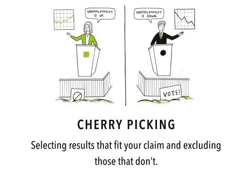
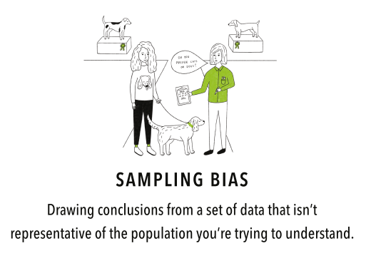
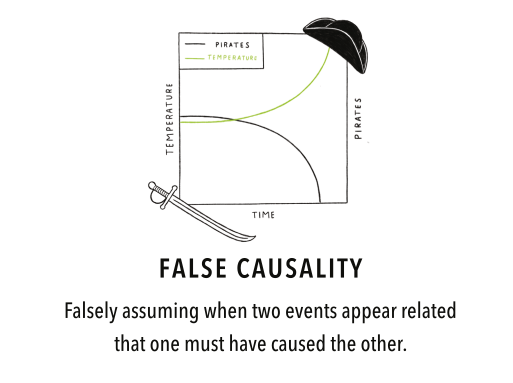
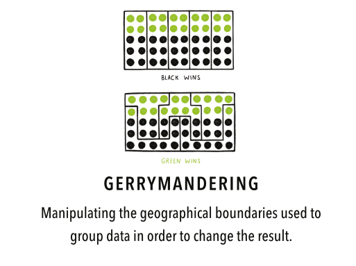
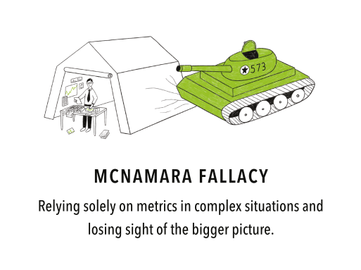
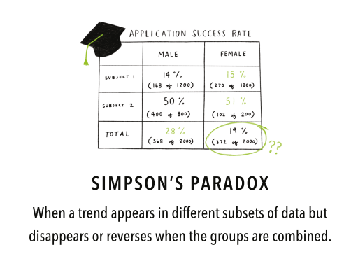

Mini-Lecture: Data Fallacies
Machine Learning for Biomedical Data
Scott Doyle / scottdoy@buffalo.edu
Announcements
Final Project Details
The final writeup will be a journal manuscript-style report detailing the project you’ve been working on.
It should be written formally, with a set of sections, references, figures, etc.
The other assignment pages will remain open, so if there’s anything you’re missing, please submit it ASAP!
Final Project: Outline
- Title
- Author List (and affiliations)
- Abstract
- Introduction / Previous Work
- Materials and Methods
- Experimental Setup
- Results
- Discussion / Conclusion
Some Hints
- Intro / Previous Work should include details of any studies that have used this data, including a few citations on the background of the problem.
- Materials / Methods is where you describe your data, any pre-processing steps, your classifiers, what do they do, and why you chose them. This should be in two sections: Supervised vs. Unsupervised.
- Experimental Setup is where you describe the process of classification – cross-validation, train/test splits, etc.
- Results and Discussion can be merged, but this is where you go through all the results that you’ve got so far and what those results mean in the context of your chosen problem.
Engineering Responsibility
Biases, Biases Everywhere
When working with data, it’s easy to think that because you’re “doing science,” you are being objective and free from bias.
This is dangerous and wrong!
Dangers of Mathematics
\begin{block}{Cathy O’Neil, “Weapons of Math Destruction”} \textit{Models are opinions embedded in mathematics.}
\textit{We’re weaponizing math, because people are afraid of math, and they trust math, and they stop asking questions when they see formulas…} \end{block}
Responsibility to the Client
As engineers, we have a responsibility to be clear about how our methods work, as well as the biases and potential pitfalls in applying our algorithms to real-world data, where there are real consequences.
We cannot predict all of our mistakes and biases, but we can try to steer clear of some of the biggest ones.
Data Fallacies
Source of the List
There are different types of fallacies – logical, philosophical, etc. – but here we deal with “data” fallacies, those that arise from misinterpretation (either intentional or unintentional) of data.
This list originated from the Data Literacy Guide on Geckoboard.com (no affiliation), and provides a nice pictoral overview of some common data fallacies.
Overfitting

Summary Statistics

Cherry Picking

Sampling Bias

Regression Towards the Mean

Cobra Effect

Data Dredging

False Causality

Gambler’s Fallacy

Gerrymandering

McNamara Fallacy

Hawthorne Effect

Publication Bias

Simpson’s Paradox

Survivorship Bias